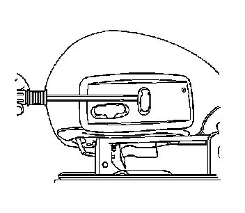
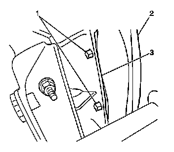
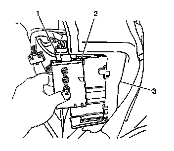
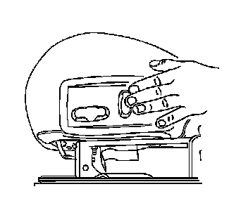

Power Seat Switch Replacement
Power Seat Switch Replacement
Removal Procedure
Caution: Refer to SIR Caution (SIR Caution) .
1. Disable the SIR system. Refer to SIR Disabling and Enabling (Service and Repair) .
2. Remove the seat cushion from the adjuster track enough to gain access to the power seat switch. Refer to Front Seat Cushion Replacement (Front Seat Cushion Replacement) .

3. Remove the knobs from the switch by gently prying them off using a flat-bladed tool.

4. On the underside of the seat cushion, locate the retainers (1) securing the power seat switch bezel to the seat cushion frame (3).
5. Squeeze the retainers while gently prying the bezel from the seat cushion frame.
6. Remove the power seat switch bezel.
7. Release the J channel retainers securing the seat cushion cover to the seat cushion frame in order to gain access to the power seat switch.

8. Remove the push-in fastener securing the power seat switch (2) to the seat cushion frame (3).
9. Slide the power seat switch (2) from the seat cushion frame (3).
Notice: Note the correct routing of the electrical wiring. Failure to reinstall the wiring properly could result in damage to the wiring.
10. Disconnect the electrical connector (1) from the power seat switch.
Installation Procedure
1. Install the wiring harness in the position in which it was removed.
2. Connect the electrical connector to the power seat switch.
3. Slide the power seat switch upward into the seat cushion frame.
4. Install the push-in fastener in order to secure the power seat switch to the seat cushion frame.
5. Install the seat cushion cover over the switch.
6. Position the power seat switch bezel over the switches.
7. Engage the power seat switch bezel fasteners in order to secure the bezel to the seat cushion frame.

8. Install the power seat switch knobs.
9. Install the seat cushion. Refer to Front Seat Cushion Replacement (Front Seat Cushion Replacement) .
10. Enable the SIR system. Refer to SIR Disabling and Enabling (Service and Repair) .